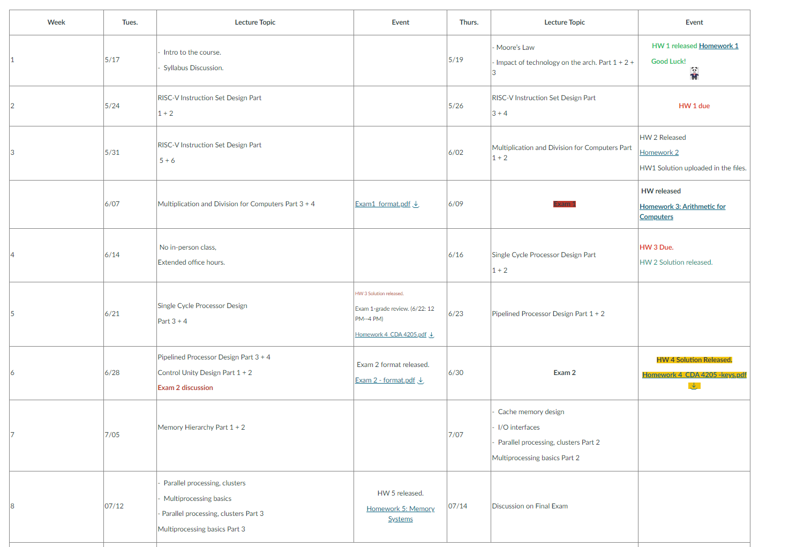
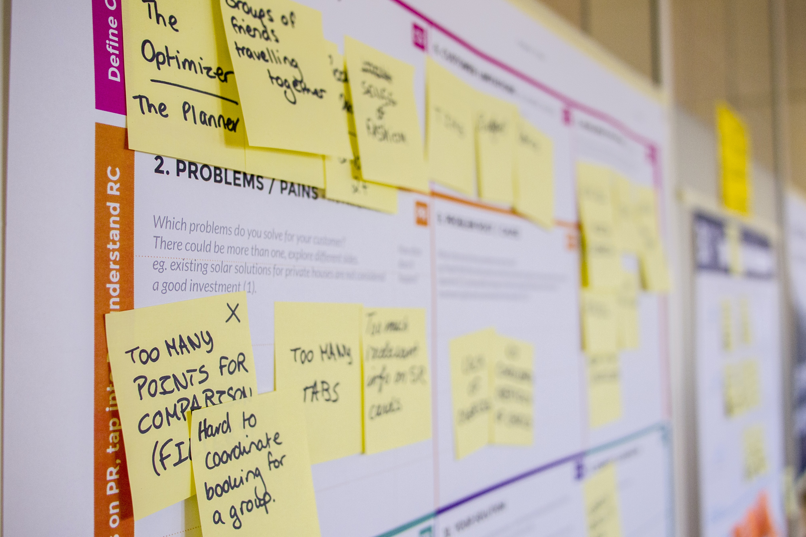
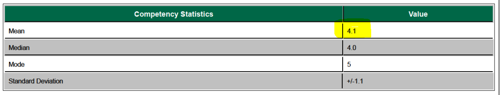
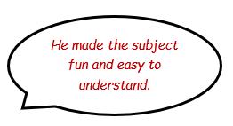
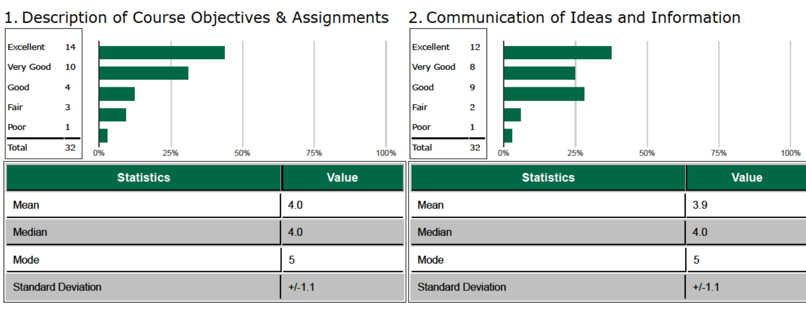
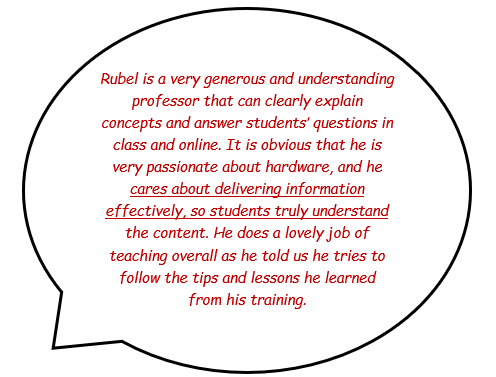
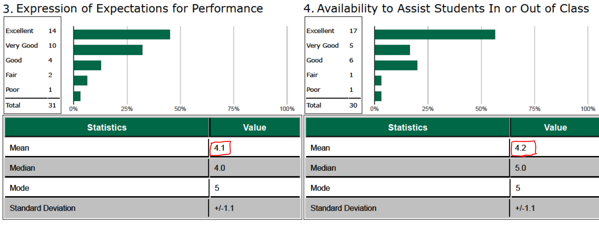
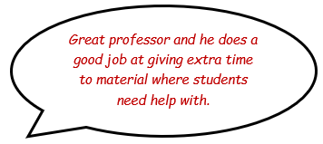
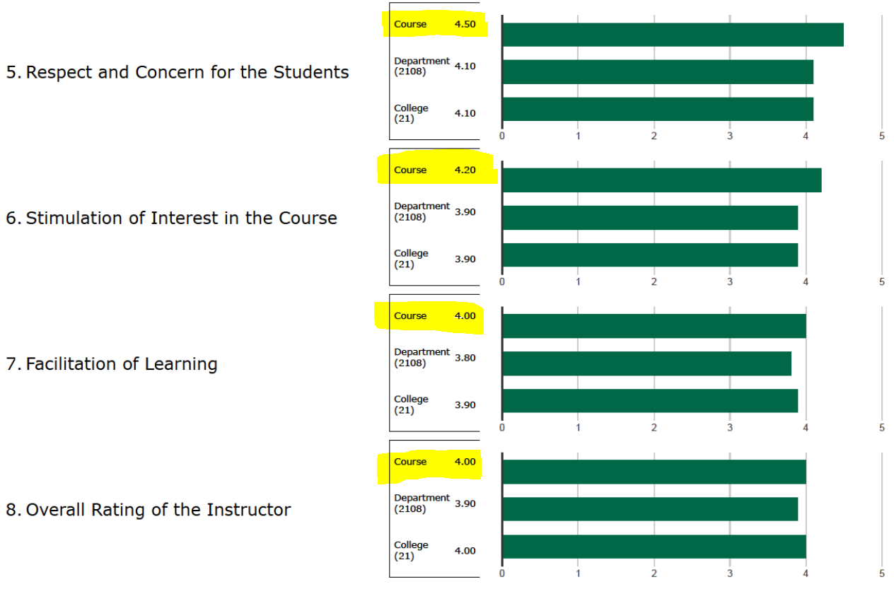
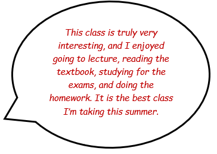

Postdoc @UCF for Assured Neuro-Symbolic Learning and Reasoning (ANSR)
Email: mdrubel.ahmed@ucf.edu
| Summer 2022: | Computer Architecture (CDA 4205) |
| Summer 2022: | Computer Architecture Lab (CDA 4205L) |
| Summer 2019: | Computer Architecture (CDA 4205) |
Graduate Teaching Assistant
| Spring 2020: | FPGA Design (CDA 4253) |
| Spring 2020: | Sys Integration & Architecture (CIS 3433) |
| Spring 2019: | Computer Architecture (CDA 4205) |
| Fall 2018: | Cloud Computing for IT (CIS 4083) |
| Fall 2018: | Software Engineering (CEN 4020) |
I had the opportunity to teach a course called Computer Architecture (CDA 4205) during the summers of 2022 and 2019. The goal of the course was to provide students with the core knowledge they need to understand instruction sets (specifically MIPS 32/RISC-V) and modern computing architectures. In the summer of 2022, I decided to take my teaching to the next level by attending a unique training course, Preparing for College Teaching (PCT), organized by the Center for Innovative Teaching & Learning (CITL). I noticed significant improvements in my teaching style by applying scientifically proven backward course design and delivery methods I learned from PCT. The sections below describe my narrative for this course design and delivery, innovation, and success achieved in this course. Finally, I highlight some comments made by my students in the course evaluation.
Syllabus: A well-crafted syllabus is the first step toward a thoughtful course design. In addition, it serves as a formal agreement between the students and the instructor, outlining essential details such as grading policies, academic integrity guidelines, expectations for student conduct, attendance policies, policies on late submissions, and other pertinent information related to the course. I have consistently emphasized the importance of the syllabus as a fundamental component of the course. Therefore, during the first class, I provide a thorough overview of the syllabus and its contents, ensuring that all students understand its importance and the expectations set forth within it. To further reinforce the significance of the syllabus, I set a quiz during the second class, which evaluates the student's understanding of the syllabus and their ability to adhere to its policies. This sample syllabus is the actual syllabus I developed for the course. The course content included standard learning materials as well as additional class activities, like pop-quiz, think-pair-share, concept maps, etc. There was a SMART (Specific, Measurable, Achievable (or Attainable), Realistic (or Relevant), and Time-bound.) end goal for every lecture in my class.
Lesson Plan: I consider lesson plan as a necessary tool to keep my learning objectives in mind throughout the lesson. I implement active learning strategies in my lesson plan. An example sample lesson plan can be downloaded here. I never forget to ask the muddiest part of the lesson by the end of each class.
Assesment: Assessment is an essential component of the teaching and learning process, as it provides feedback to both the teacher and the student about the effectiveness of the instructional methods being used. I used a variety of summative and formative assessments to gather a comprehensive picture of students' knowledge, attitudes, and skills, and utilized this information to improve the learning experience for everyone involved. A sample assesment can be downloaded here.
Overall, I thoroughly enjoyed teaching this course and am thrilled to have had the opportunity to enhance my teaching skills.
Innovation and Success
Innovation in classroom teaching can take many forms. As an educator, I strive to be unique and resourceful in my approach to teaching, constantly seeking new ways to engage my students and facilitate their learning. Some of the innovative techniques I applied successfully in my class are as follows.
|  | Communication is the key:
I utilized the canvas course home page to keep my students up-to-date with this course by providing a concise summary of activities in each lecture week. I believe this kind of weekly summary makes the course more engaging. |
 |
Call by name:
Addressing students by their names can help to establish a personal connection and build rapport with them. There were 39 students in my class, and I memorized most of their names who showed up regularly. It helped me provide more personalized feedback and support. |
|  | Mid-term survey:
I conducted this survey through halfway a course to assess student feedback and identify areas for improvement. I ensured the instructor's teaching style, course content and materials, classroom environment, and overall satisfaction meets the expectation of the class. The mid-term survey is a valuable tool for students, as it allows them to express their opinions and concerns about the course and provide input into the learning process. |
I led weekly discussion sessions, assisted students during office hours, and provided and taken timely feedback.
Student Evaluations
My teaching evaluation score is higher in many sections than average in the College of Engineering at USF. Some motivating comment I got from the students is as follows.
N.B: Comments are unaltered except for minor spelling or punctuation corrections.
|  |  |
|  |  |
|  |  |
|  |  |
Complete assesment of my teaching could be found here: evaluation (Summer 2022)
Download a copy of my teaching philosopy: TP
I aim to excel in teaching courses fundamental to Computer Engineering, such as Program Design, Computer Architecture, Discrete Mathematics, Logic Design, etc. However, my broader vision is to enable human minds to think analytically. I believe teaching is a novel profession that provides knowledge and wisdom to society, and learning is a process of enlightenment.
Learning is often regarded as a positive change in the student's behavior. I seek to facilitate students' learning on three H's, namely Hand (Psychomotor), Head (Cognitive), and Heart (Affective). My course design includes collaborative project activities (hand on), where each student needs to participate in brain-storming (head-on), and I embed a sense of accomplishment for each exercise so that the learning is enjoyable (heart-on) to them. My teaching conveys conceptual knowledge through standard methods. It encompasses syllabus design, lesson planning, classroom management, content development, and devising appropriate assessments to ensure learning happens. I believe the role of a teacher is to facilitate the complex and dynamic human learning process. Teaching and learning can occur in a self-evolving feedback fashion.
While designing the syllabus for a particular course, I follow the backward course design strategy- I start with an end goal in my mind. The syllabus clearly articulates my expectations and what the students should expect to achieve from the course. Access to information has been so easy and pervasive that I don't prefer loading students with much information. Instead, I think it's the best time we emphasize the higher cognitive domain of Bloom's Taxonomy, like critical thinking. My learning outcomes exclusively focus on students' development of analytical ability. As a student of exact science (engineering), I design course outcomes that involve students' participation in collaborative projects, leading to the highest level of cognitive domain: creation. For each course I teach, learning outcomes for each lesson specify the audience, behavior, condition, and degree of the assessment.
My principal concern for each class is planning a lesson and executing the plan accordingly. As a student, I learned best through active learning strategies. From the beginning of the course, I have worked towards building an engaging community in the class. I facilitate maintaining a rapport in the class by encouraging students to participate in various classroom activities like concept mapping, flash paper, problem-based learning, etc. Nowadays, the course could be more interactive using services like i-clickers, QR code scanners, flash/popup quizzes, etc. I ensure my students read assigned materials and use class time primarily for logical reasoning, connecting with the existing knowledge, open discussion, and formative assessments. A general approach I follow for each class is called the RPVRP method. It stands for reviewing today's lecture, previewing the last lesson, viewing today's class, reviewing today's lesson, and previewing tomorrow's class. I always remember to ask the students the muddiest point of that class to ensure the essential materials are appropriately delivered. In an online course, I will be available to answer students and follow the best practices for online teaching, such as ensuring students know the expectations, providing maximum availability, and building a sense of connectivity among students and teachers.
As a teacher or learning facilitator, feedbacks are invaluable to me. I think students' feedbacks are most effective for a class if taken some time between the halfway of the course: mid-term feedback. Therefore, I collect mid-term feedback to evaluate my teaching and adjust as necessary. I always welcome discussion regarding the course delivery and intend to improve incrementally. My teaching activity amalgamates traditional and online teaching resources to bring the best of both worlds. I am open to enhancing my skills as an educator using peer review and reflective portfolio and attending workshops on teaching.
Video of Microteaching assignment for the course: Preparing for College Teaching
A short recording from my class delivered in summer 2022: CDA4502 Computer Architecture (watch on youtube if not loaded already.)